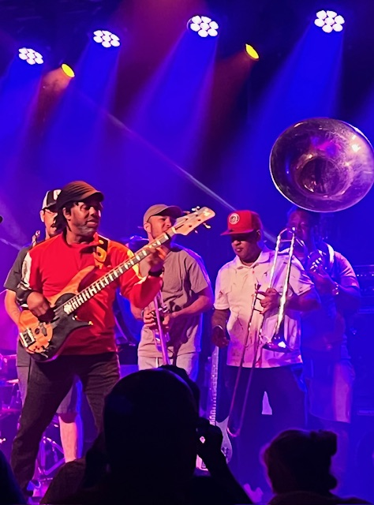
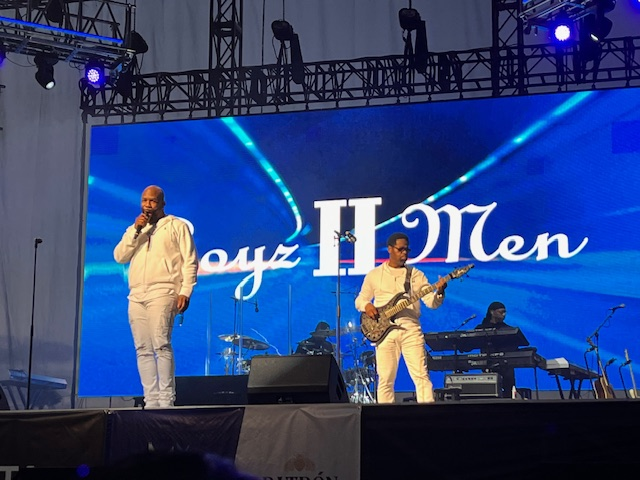
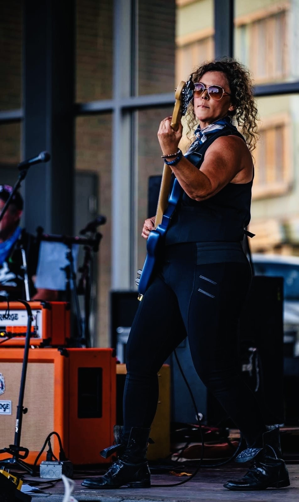

Victor Wooten
Victor Wooten is considered one of the greatest bass players of all time and is known for his incredible speed, technique, and creativity. He can make the bass sound like a lead instrument by using techniques like slapping, tapping, harmonics, and fast fingerstyle playing. Wooten is also a teacher who believes that becoming a great musician is about listening, creativity, and connecting with other, not just learning notes and technique. He and his wife own Wooten Woods, a 150-acre retreat in Tennesse where he runs the Center for Music and Nature and teaches musicians in an outdoor camp setting. Beyond his amazing bass skills, I think one of the coolest things about Victor Wooten is his focus on nature, education, helping others, and his belief that being a good person is just as important as being a good musician.

Nathan Morris
Nathan Morris is best known as a founding member and baritone singer of Boys-II-Men, but he is also a musician who plays bass guitar. During their live shows, the group sometimes switches things up, with Nathan on bass and Shawn Stockman on guitar, performing rock classics like The Beatles "Come Together" and Lenny Kravitz's "Are you Gonna Go My Way". I saw Boys II Men perform in San Diego in 2022, and watching them come out with instruments completely surprised me. They were already incredible singers, but seeing another side of their musicianship elevated the entire concert for me.

My Bass Story
I've wanted to play guitar since I was about eight years old and have owned acoustic guitars throughout most of my life. I got my first electric guitar for Christmas when I was 12 years old, but I never pursued learning how to play them. Music was something I always wanted to be part of, but I kept putting it on the backburner. Eventually I picked up the bass, 4 years ago to be exact, took some lessons and finally gave myself the chance to pursue music. I now play bass for Habitual Strangers, a female-fronted rock band based in Chattanooga, where my wife Jess is the lead singer. We play a mix of original music and covers. Playing in a band has given me the chance to finally do somethign I wanted to do for most of my life, and I'm still learning and getting better every time I play.
